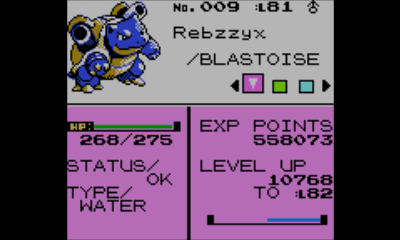
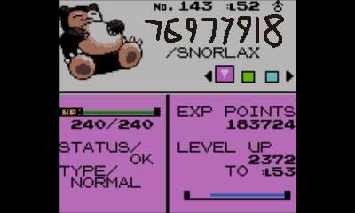
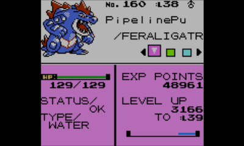
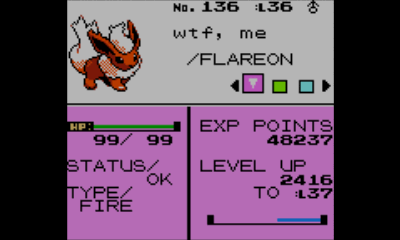
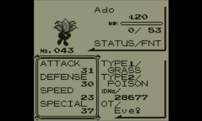
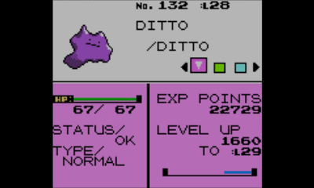
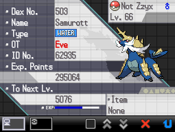
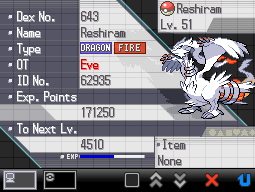

These are my favourite pokemon! (autism page) Back to "Eve's Website"

Blastoise Rebzzyx
Born in: Red | Lives in Crystal
Starting his journey in my Pokemon Red playthrough of 2023, this Blastoise is the oldest Pokemon I have, and while I had played some Pokemon before the red playthrough, I like to consider this guy my first and favourite Pokemon! In red, he was number one in my team pretty much all the time, minus a few times where I felt the need to increase the levels of some others, I taught him possibly the most powerful move in the game, Fissure, and he is of course, present in the Hall of Fame. Later on, I unlocked the time machine in Crystal and he was, of course, the first to come to mind when it came to Pokemon I'd like to have with me on my new adventure in Johto, though I had to get the necessary gym badge for him to obey first, which also happened to be the final gym badge in the game. Of course, I didn't want to have went through the effort of transferring him for nothing, and so he came with me to Victory Road to get an entry on yet another game's Hall of Fame.

Snorlax
Born in: Red | Lives in Crystal
I remember catching this fella because he was blocking the way at some point during my dominance of Kanto, and he's been a really fun member of my team ever since! I regret not taking him with me to the Victory Road of Red, but he was with me in Crystal :D I wish to nickname him "KidSnorlax" to match the scenecore name of my Blastoise, Rebzzyx, however I unfortunately cannot do so as you cannot rename traded Pokemon, including those traded with the time machine.

Feraligatr PipelinePu
Born in: Crystal | Lives in Crystal
This guy was with me throughout my entire Crystal playthrough, so of course I like him :D

Flareon wtf, me
Born in: Red | Lives in Crystal
This Pokemon evolved from an Eevee, hense the name, as "Eevee" and "Eve" are similar :P I love all evolutions of Eevee and this is likely going to be the first of many.

Oddish Ado
Born in: Red | Lives in Red
This Pokemon is kind of iconic as they were with me the entire game and I barely leveled them up? I taught them cut, then realised I sorta needed to take them with me everywhere now because none of my other Pokemon could learn it. The first of my many HM slaves basically. Looks really funny seeing a level 20 pokemon alongside all my other level 50+ pokemon in the Hall of Fame.

Ditto
Born in: Red | Lives in Crystal
I love this Pokemon cause they can transform into anything! Simple as :D

Samurott Not Zzyx
Born in: Black | Lives in Black
Imbetween the playthroughs of Pokemon Red and Pokemon Crystal that you've seen from previous entries, there was a Pokemon Black playthrough. Why? I love Gen 1 but it can be very frustrating and I wanted to get as far away from that as possible for my next Pokemon experience. So, this Pokemon had to live up to how much I loved my Blastoise, and it damn does!! I love this guy! He was with me throughout my entire journey in the Unova region, my favourite region for sure.

Reshiram
Born in: Black | Lives in Black
I love this Pokemon because they remind me of the awesome battle with my favourite Pokemon character, N! I won't spoil too much other than this Pokemon is involved and it's damn awesome. Also yeah, I caught them with a regular ball, guess I was lucky?